Overview: This project dealt with more complicated raytracing topics. Specifically, I worked on part 1 and 4, which handles mirror/glass
materials and camera depth of field, respectively. Honestly, the spec explained what to do fairly well so there weren't many
problems on my end. There were a few parts I misunderstood, such as how to use the reflect and refract functions, but other than
that it was pretty straight forward.
Part 1: Mirror and Glass Materials
- Summary, Explanation, Comparisons
-
Essentially for this part of hw 3-2, I implemented the functions required to perform ray tracing on mirror and glass
materials. What that really boils down to, is that rays need to be able to be reflected (mirror) and also refracted/bent
(glass) just as they are in real life. There are some approximations we make. Specifically for glass, we approximate
the Fresnel coefficient with Schlick's approximation, which is far easier to compute, but less realistic.
-
I further explain why my images look the way they do below, but generally it has to do with bounces and warping of
light. Specifically, the left sphere is one bounce behind the rest of the scene, since it's reflecting the scene around
it. The right sphere is warping the light rays.
- Show a sequence of six images of scene CBspheres.dae rendered with max_ray_depth set to 0, 1, 2, 3, 4, 5, and 100. The other settings should be at least 64 samples per pixel and 4 samples per light.
|
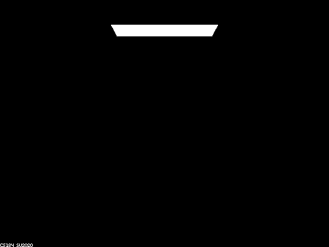
CBspheres_64_4_0: 0 bounces
|
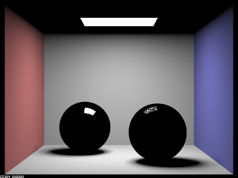
CBspheres_64_4_1: 1 bounce
|
 CBspheres_64_4_2: 2 bounces
CBspheres_64_4_2: 2 bounces
|
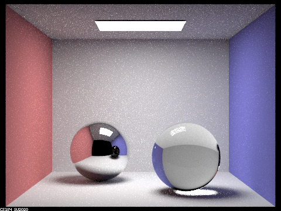
CBspheres_64_4_3: 3 bounces
|
|
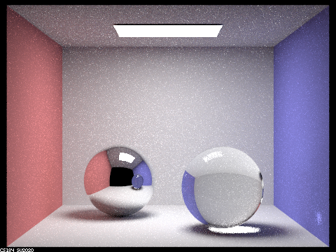
CBspheres_64_4_4: 4 bounce
|
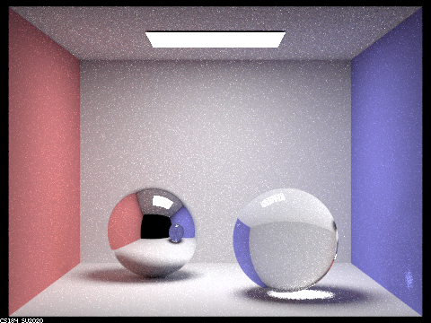
CBspheres_64_4_5: 5 bounces
|
|
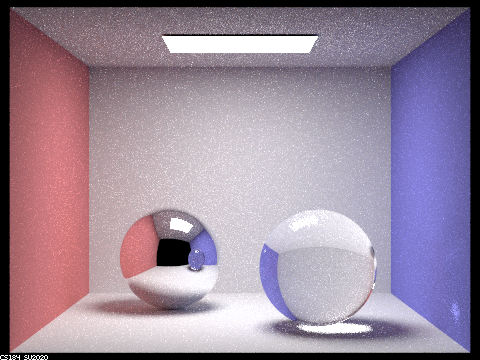
CBspheres_64_4_100: 100 bounces
|
- Point out the new multibounce effects that appear in each image.
-
The left sphere is reflecting light and shows us what it would look like if
the camera was instead placed where the sphere was. We can see the black void that the camera side of the box opens up to.
The right sphere is refracting the light going through it, which explains why it looks different from the left sphere.
- Explain how these bounce numbers relate to the particular effects that appear.
-
One way to think about what's being seen is that
the view on the sphere is one "step" behind, in that it requires an extra bounce to reflect what we see in the rest
of the scene. This is because the surface of the spheres count as one bounce. Specifically, look at the 2 bounce image.
The ceiling is unlit within on the surface of the sphere, just as it was in the 1 bounce image.
Part 4: Depth of Field
CBdragon_256_4_12_005_10: my attempt to recreate the example image in the spec
Summary, Explanation, Comparisons
-
Essentially for this part of hw 3-2, I implemented a way for rays to pass through a circular lens before reaching
the scene. The rays are randomly sampled in this lens and allows for rays to be bent through it. This means light from
the scene has more ways to "reach" the pixels for the image displayed.
-
As I increase the focal distance, the more "accurate" the rays bent through the lens become for objects further away.
This is because, with a short focal distance, the "blue" (according to the spec) bent ray hits a completely different
point than the "red" ray when tracing all the way to a further (or much closer) object.
-
Aperture size affects how many possible different rays can be bent through through the lens. As I increase aperture
size, more world surface area can contribute to the pixels in the image. This causes a bluriness seen in the images
below.
- In a few sentences, explain the differences between a pinhole camera model and a thin-lens camera model.
- If I understand it all correctly, a pinhole camera only lets light into the camera at a single point.
-
A thin-lens camera model instead allows light into the camera through a circle (the lens). This means more rays are
able to enter the camera, so we're able to get a picture that includes more ways light can reach the camera. Practically,
this means that objects in focus are seen/rendered as normal, but objects further or closer than the focal distance appear
blurry. I believe this is due to the way a lens bends light and causes the out-of-focus objects to spread their light rays
over a larger area, instead of them all going to a smaller area with a smaller aperture.
- Show a "focus stack" where you focus at 4 visibly different depths through a scene.
|
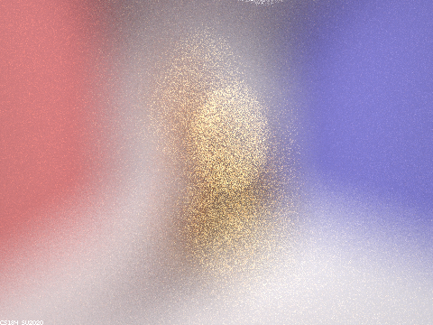
CBdragon_64_4_12_002_01: focal distance d = 0.1
|
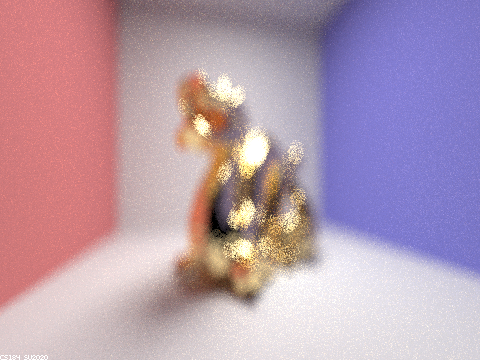
CBdragon_64_4_12_002_04: focal distance d = 0.4
|
|
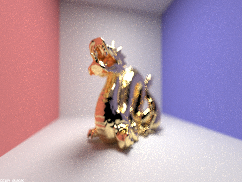
CBdragon_64_4_12_002_07: focal distance d = 0.7
|
CBdragon_64_4_12_002_10: focal distance d = 1.0
|
- Show a sequence of 4 pictures with visibly different aperture sizes, all focused at the same point in a scene.
|
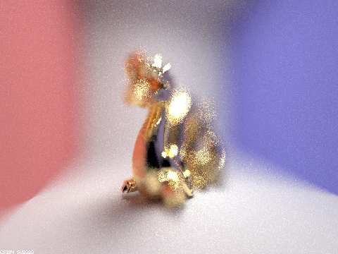
CBdragon_64_4_12_02_10: lens radius b = 0.2
|
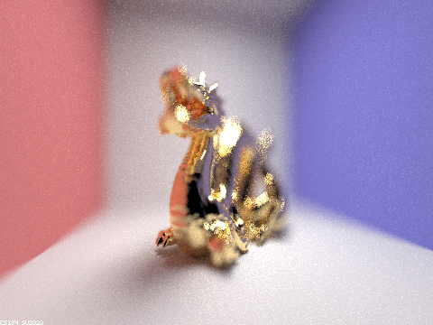
CBdragon_64_4_12_01_10: lens radius b = 0.1
|
|
CBdragon_64_4_12_005_10: lens radius b = 0.05
|
CBdragon_64_4_12_002_10: lens radius b = 0.02
|
Link to Project 3-2 webpage